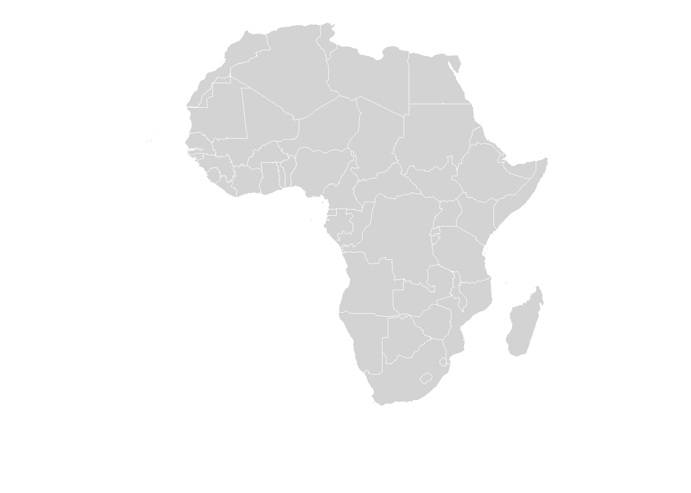
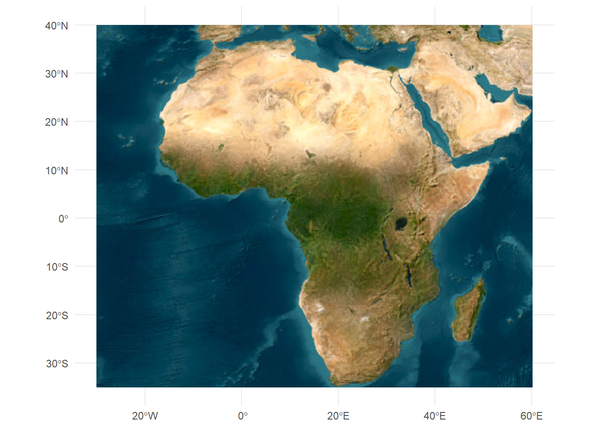
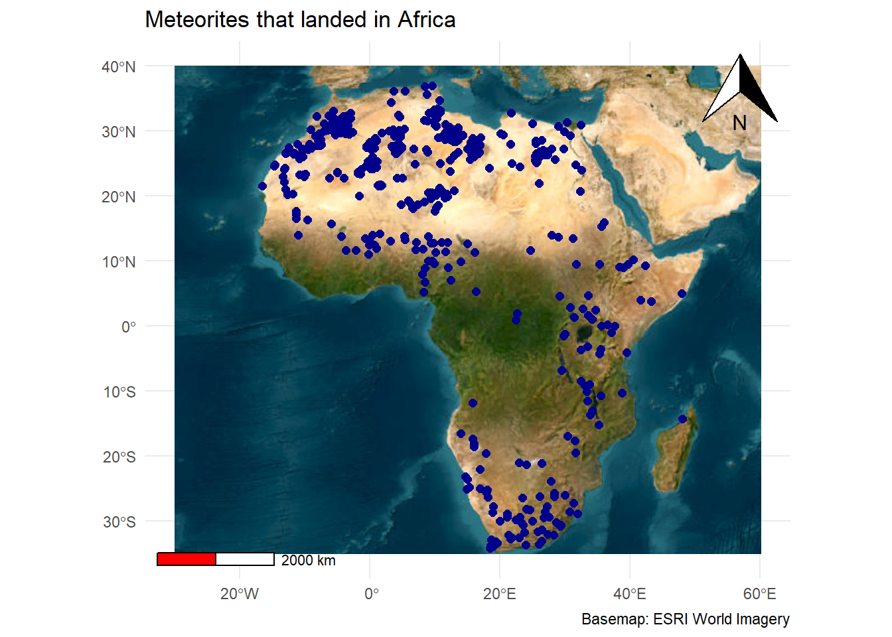

Show code
library(tidyverse)
library(here)
library(maps)
library(sf)
library(rnaturalearth)
library(rnaturalearthdata)
library(maptiles)
library(tidyterra)
library(tidygeocoder)
library(ggspatial)1) Load libraries
library(tidyverse)
library(here)
library(maps)
library(sf)
library(rnaturalearth)
library(rnaturalearthdata)
library(maptiles)
library(tidyterra)
library(tidygeocoder)
library(ggspatial)2) Load in the data
The chosen one: Meteorites
meteorites <- readr::read_csv("https://raw.githubusercontent.com/rfordatascience/tidytuesday/main/data/2019/2019-06-11/meteorites.csv") |>
drop_na()|>
write_csv(here("week_07", "data", "meteorites.csv")) #export dataset in designated data folder
#Look at the data
head(meteorites)# A tibble: 6 × 10
name id name_type class mass fall year lat long geolocation
<chr> <dbl> <chr> <chr> <dbl> <chr> <dbl> <dbl> <dbl> <chr>
1 Aachen 1 Valid L5 21 Fell 1880 50.8 6.08 (50.775, 6…
2 Aarhus 2 Valid H6 720 Fell 1951 56.2 10.2 (56.18333,…
3 Abee 6 Valid EH4 107000 Fell 1952 54.2 -113 (54.21667,…
4 Acapulco 10 Valid Acapulc… 1914 Fell 1976 16.9 -99.9 (16.88333,…
5 Achiras 370 Valid L6 780 Fell 1902 -33.2 -65.0 (-33.16667…
6 Adhi Kot 379 Valid EH4 4239 Fell 1919 32.1 71.8 (32.1, 71.…3) Data Analysis: Make a Map
africa <- ne_countries(continent = "africa", scale = "medium")
ggplot(africa) +
geom_sf(fill = "lightgray",
color = "white") +
coord_sf(crs = 4326) +
theme_void()
# Define a bounding box around Africa
# xmin/xmax = westmost/eastmost longitude
# ymin/ymax = southernmost/northernmost latitude
africa_bbox <- st_as_sfc(
st_bbox(c(xmin = -30, ymin = -34.85,
xmax =60, ymax = 40),
crs = 4326) # crs = 4326 means WGS84 — the lat/lon system your GPS uses
)
tiles_satellite <- get_tiles(
africa_bbox, # the area to download
provider = "Esri.WorldImagery", # which tile source to use
zoom = 3, # level of detail (3 = continent, 20 = building)
crop = TRUE # clip to our exact bbox (vs. slightly larger)
)
# geom_spatraster_rgb() is from {tidyterra}
# It reads the 3 color layers and renders them as a photo
ggplot() +
geom_spatraster_rgb(data = tiles_satellite) +
coord_sf(crs = 4326) +
theme_minimal()
# Step 1: convert your data frame to an sf object
# coords tells sf which columns hold longitude and latitude
meteorites_sf <- st_as_sf(meteorites,
coords = c("long", "lat"),
crs = 4326)
#had trouble filtering the data to a certain continent
#got help from: https://stackoverflow.com/questions/57014381/how-to-filter-an-r-simple-features-collection-using-sf-methods-like-st-intersect
meteorites_africa <- st_filter(meteorites_sf, africa, .predicate = st_within)
#.predicate = function that helps keep the data within the polygon & drops the rest
head(meteorites_africa) #checkSimple feature collection with 6 features and 8 fields
Geometry type: POINT
Dimension: XY
Bounding box: xmin: -9.57028 ymin: 2 xmax: 32.41275 ymax: 20.74575
Geodetic CRS: WGS 84
# A tibble: 6 × 9
name id name_type class mass fall year geolocation
<chr> <dbl> <chr> <chr> <dbl> <chr> <dbl> <chr>
1 Aioun el Atrouss 423 Valid Diogenite-pm 1000 Fell 1974 (16.39806, -9…
2 Aïr 424 Valid L6 24000 Fell 1925 (19.08333, 8.…
3 Akwanga 432 Valid H 3000 Fell 1959 (8.91667, 8.4…
4 Al Zarnkh 447 Valid LL5 700 Fell 2001 (13.66033, 28…
5 Alberta 454 Valid L 625 Fell 1949 (2.0, 22.6666…
6 Almahata Sitta 48915 Valid Ureilite-an 3950 Fell 2008 (20.74575, 32…
# ℹ 1 more variable: geometry <POINT [°]>ggplot() +
geom_spatraster_rgb(data = tiles_satellite) +
geom_sf(data = meteorites_africa,
color = "darkblue",
size = 2) +
annotation_scale( # scale bar
location = "bl", # bl = bottom-left
bar_cols = c("red", "white")) +
annotation_north_arrow( # north arrow
location = "tr") + # top right
coord_sf(crs = 4326) +
labs(title = "Meteorites that landed in Africa",
caption = "Basemap: ESRI World Imagery") +
theme_minimal()Scale on map varies by more than 10%, scale bar may be inaccurate
#save to outputs folder
ggsave(here("week_07", "outputs", "meteoritesAfrica_map.pdf"))Saving 7 x 5 in image
Scale on map varies by more than 10%, scale bar may be inaccurateFun facts!
Over half of the meteorites ever found were from Antarctica.
Most meteorites are found in deserts
The Sahara Desert (northern Africa) is a region with one of the highest counts of meteorites retrieved.
For more interesting read, see Geography Realm